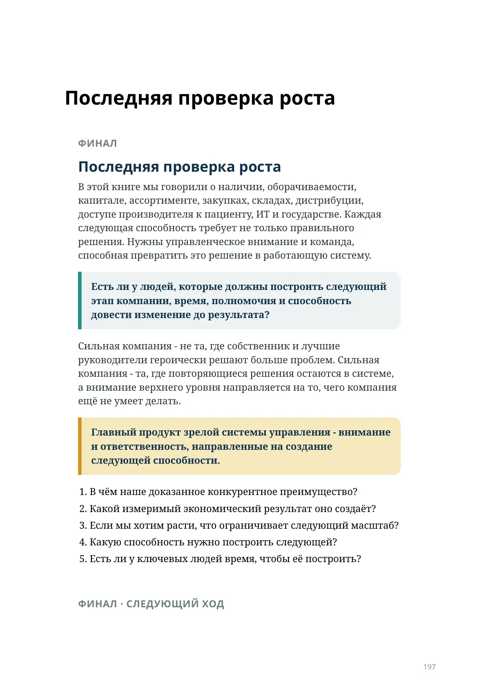
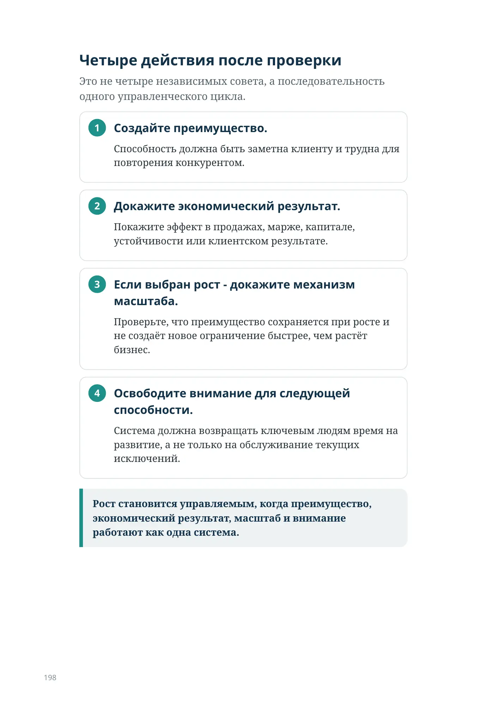

Последняя проверка роста
ФИНАЛ
Последняя проверка роста
В этой книге мы говорили о наличии, оборачиваемости, капитале, ассортименте, закупках, складах, дистрибуции, доступе производителя к пациенту, ИТ и государстве. Каждая следующая способность требует не только правильного решения. Нужны управленческое внимание и команда, способная превратить это решение в работающую систему.
Есть ли у людей, которые должны построить следующий этап компании, время, полномочия и способность довести изменение до результата?
Сильная компания - не та, где собственник и лучшие руководители героически решают больше проблем. Сильная компания - та, где повторяющиеся решения остаются в системе, а внимание верхнего уровня направляется на то, чего компания ещё не умеет делать.
Главный продукт зрелой системы управления - внимание и ответственность, направленные на создание следующей способности.
- В чём наше доказанное конкурентное преимущество?
- Какой измеримый экономический результат оно создаёт?
- Если мы хотим расти, что ограничивает следующий масштаб?
- Какую способность нужно построить следующей?
- Есть ли у ключевых людей время, чтобы её построить?
ФИНАЛ · СЛЕДУЮЩИЙ ХОД
Четыре действия после проверки
Это не четыре независимых совета, а последовательность одного управленческого цикла.
Создайте преимущество.
Способность должна быть заметна клиенту и трудна для повторения конкурентом.
Докажите экономический результат.
Покажите эффект в продажах, марже, капитале, устойчивости или клиентском результате.
Если выбран рост - докажите механизм масштаба.
Проверьте, что преимущество сохраняется при росте и не создаёт новое ограничение быстрее, чем растёт бизнес.
Освободите внимание для следующей способности.
Система должна возвращать ключевым людям время на развитие, а не только на обслуживание текущих исключений.
Рост становится управляемым, когда преимущество, экономический результат, масштаб и внимание работают как одна система.